Aktuálna ponuka
Nehnuteľnosti, ktoré ponúkam
16 nehnuteľností na predaj a prenájom. Vyberte typ, alebo napíšte lokalitu.
16 z 16 ponúk
 DomNové10
90 000 €Na predaj rodinný dom, pozemok 1066m2, Častkov okr. Senica
Častkov
85 m²
A&P REALITNÁ KANCELÁRIA Vám vo výhradnom zastúpení majiteľov ponúka na predaj čiastočne rekonštruovaný rodinný dom, ktorý sa nachádza v obci…
DomNové10
90 000 €Na predaj rodinný dom, pozemok 1066m2, Častkov okr. Senica
Častkov
85 m²
A&P REALITNÁ KANCELÁRIA Vám vo výhradnom zastúpení majiteľov ponúka na predaj čiastočne rekonštruovaný rodinný dom, ktorý sa nachádza v obci…
 DomNové10
78 000 €Výrazná zľava 4 izb. rodinný dom, pozemok 1166m2, Lopašov okr. Skalica
Lopašov
95 m²
A&P REALITNÁ KANCELÁRIA Vám v zastúpení majiteľov ponúka na predaj čiastočne rekonštruovaný rodinný dom, ktorý sa nachádza v obci Lopašov…
DomNové10
78 000 €Výrazná zľava 4 izb. rodinný dom, pozemok 1166m2, Lopašov okr. Skalica
Lopašov
95 m²
A&P REALITNÁ KANCELÁRIA Vám v zastúpení majiteľov ponúka na predaj čiastočne rekonštruovaný rodinný dom, ktorý sa nachádza v obci Lopašov…
 Dom10
285 000 €7 izbový rodinný dom-dve bytové jednotky, pozemok 3884m2, Prietrž, okr. Senica
Prietrž
240 m²
A&P REALITNÁ KANCELÁRIA vám vo výhradnom zastúpení majiteľa ponúka na predaj samostatne stojaci viacgeneračný murovaný rodinný dom, ktorý sa…
Dom10
285 000 €7 izbový rodinný dom-dve bytové jednotky, pozemok 3884m2, Prietrž, okr. Senica
Prietrž
240 m²
A&P REALITNÁ KANCELÁRIA vám vo výhradnom zastúpení majiteľa ponúka na predaj samostatne stojaci viacgeneračný murovaný rodinný dom, ktorý sa…
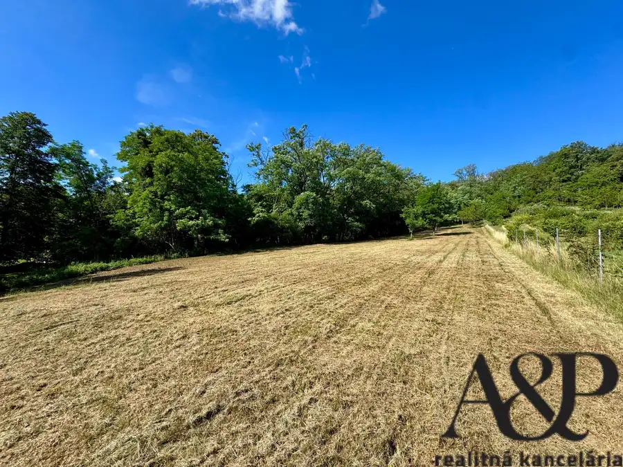
Pozemok8 73 000 €Pozemok pre výstavbu rodinného domu, 2989m2, Prietrž, okr. Senica Prietrž 2989 m² A&P REALITNÁ KANCELÁRIA - Vo výhradom zastúpení majiteľa vám ponúkame na predaj pekný slnečný pozemok v obci Prietrž vhodný na výstavbu…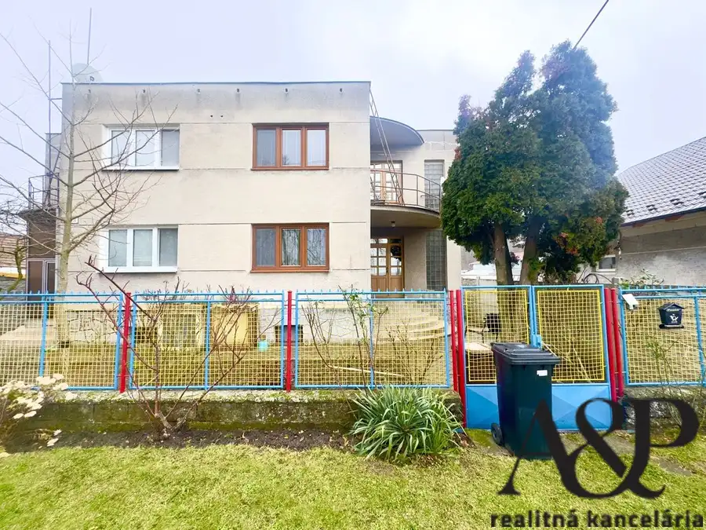
Dom10 145 000 €4 izbový RD s garážou, pozemok 776m2, železničná ul., Senica Senica 90 m² A&P REALITNÁ KANCELÁRIA vám vo výhradnom zastúpení majiteľov ponúka na predaj dvojpodlažný, podpivničený murovaný rodinný dom, ktorý je… Dom10
83 000 €Na predaj rodinný dom s garážou, pozemok 1302m2, Bukovec, okr. Myjava
Bukovec
80 m²
A&P REALITNÁ KANCELÁRIA Vám vo výhradnom zastúpení majiteľov ponúka na predaj rodinný dom s garážou, ktorý sa nachádza v obci Bukovec okr.…
Dom10
83 000 €Na predaj rodinný dom s garážou, pozemok 1302m2, Bukovec, okr. Myjava
Bukovec
80 m²
A&P REALITNÁ KANCELÁRIA Vám vo výhradnom zastúpení majiteľov ponúka na predaj rodinný dom s garážou, ktorý sa nachádza v obci Bukovec okr.…
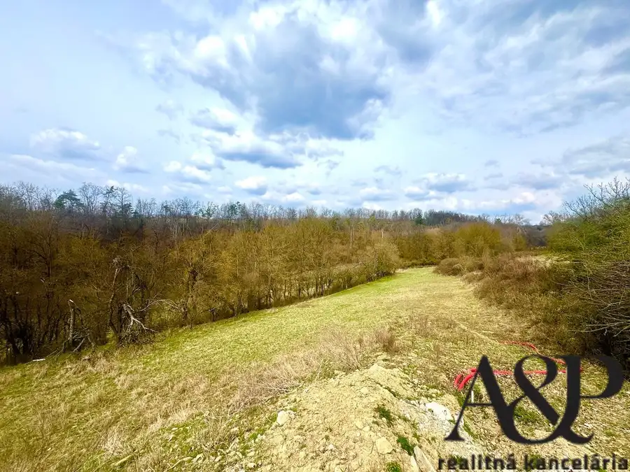
Pozemok10 59 000 €Na predaj pozemok na polosamote, 3698m2, Prietrž-Horné Paseky, okr. Senica Prietrž 3698 m² A&P REALITNÁ KANCELÁRIA - Vo výhradnom zastúpení majiteľa Vám ponúkame na predaj pozemok v lokalite Horné Paseky. Nachádza sa v nádhernej…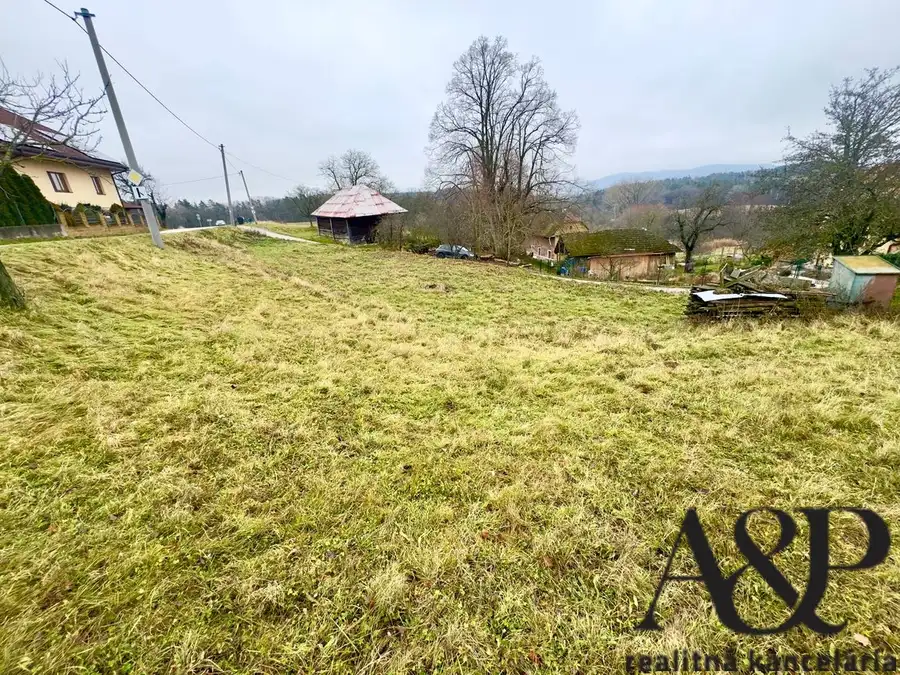
Pozemok10 23 900 €Na predaj pozemok pre rodiný dom, 820m2, u Jandíkov, okr. Myjava Myjava 820 m² A&P REALITNÁ KANCELÁRIA Vám vo výhradnom zastúpení majiteľov ponúka na predaj pozemok vhodný na výstavbu rodinného domu alebo rekreačnej…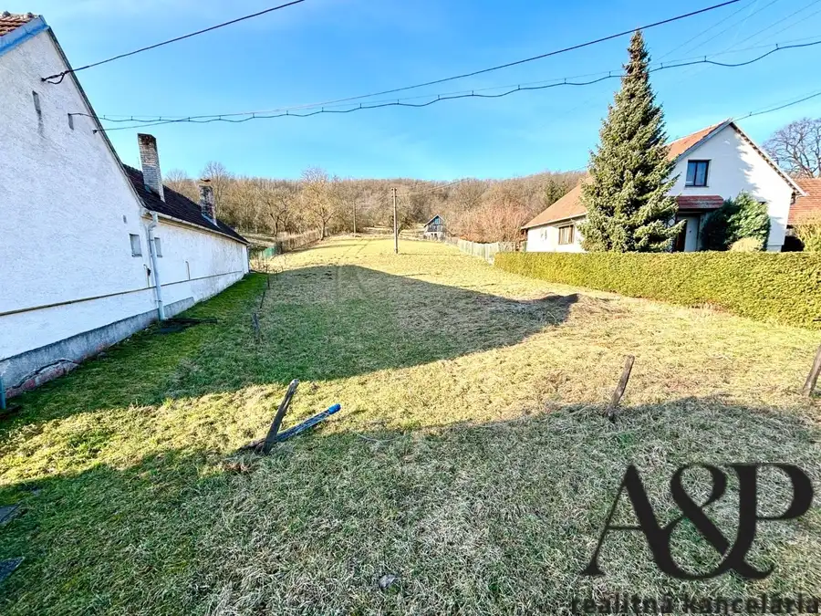
PozemokNové5 Cena dohodouPozemok pre výstavbu rodinných domov, 4243m2, Prietrž, okr. Senica Prietrž 4243 m² A&P REALITNÁ KANCELÁRIA - V zastúpení majiteľov vám ponúkame na predaj pekný slnečný pozemok v obci Prietrž vhodný na výstavbu jedného alebo…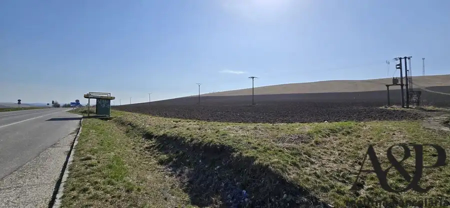
Pozemok3 Cena dohodouPozemok pre priemysel, služby, výrobu, 2013m2, Častkov, okr. Senica Častkov 2013 m² A&P REALITNÁ KANCELÁRIA - Vo výhradnom zastúpení majiteľov Vám ponúkame na predaj pozemok o rozlohe 2013m2, ktorý sa nachádza priamo pri…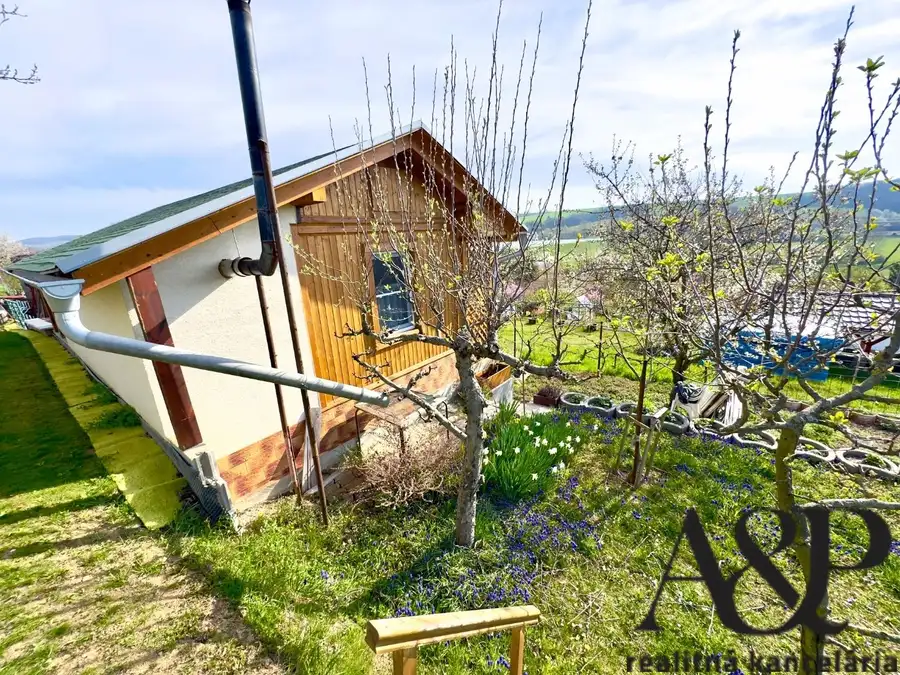
Záhradná chatka10 Cena dohodouZáhrada 450m2 s chatkou, Kunov-zo III, Senica Senica 20 m² A&P REALITNÁ KANCELÁRIA - vo výhradnom zastúpení majiteľov Vám ponúkame na predaj záhradu v záhradkárskej oblasti Kunov III, na ktorej sa…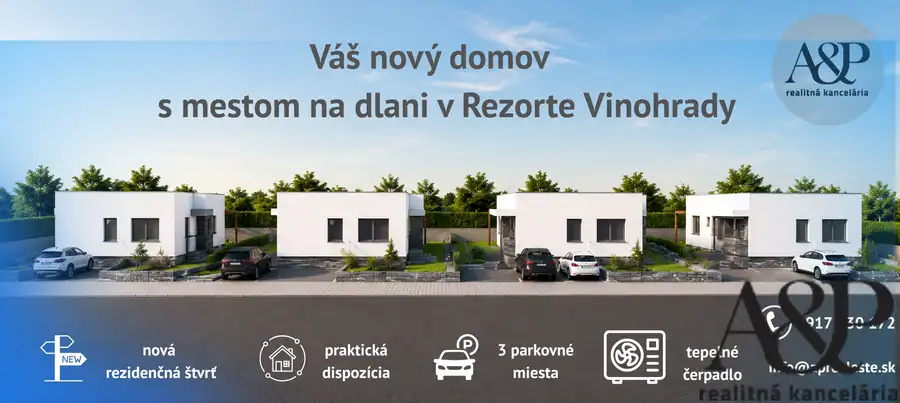
Dom7 Cena dohodouNa predaj rodinné domy v lokalite Vinohrady-Senica Senica 95 m² A&P REALITNÁ KANCELÁRIA Vám vo výhradnom zastúpení majiteľa ponúka na predaj novostavby rodinných domov, ktoré sa nachádzajú v…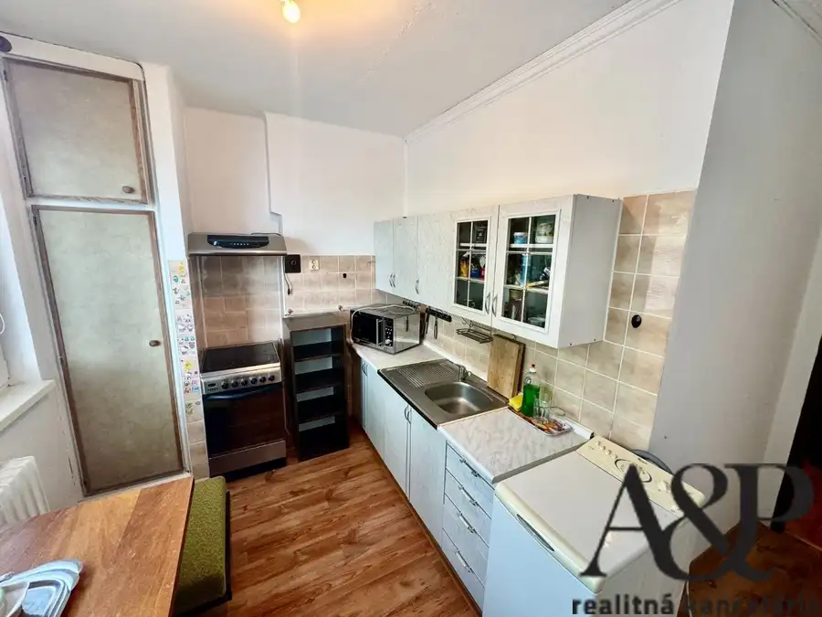
Byt9 Cena dohodouNa predaj 2 izbový byt s loggiou, 48 m2, ul. Mirka Nešpora, Holíč, okr. skalica Holíč 2-izbový48 m²3. podlažie A&P REALITNÁ KANCELÁRIA - v zastúpení majiteľa Vám ponúkame na predaj čiastočne zrekonštruovaný 2 -izbový byt, ktorý sa nachádza v širšom…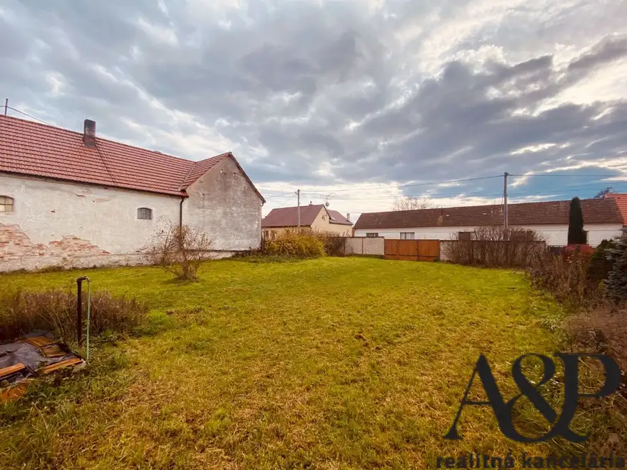
Pozemok7 Cena dohodouNa predaj pozemok pre výstavbu domov, 1934m2, Hlboké, okr. Senica Hlboké 1934 m² A&P REALITNÁ KANCELÁRIA - Vo výhradnom zastúpení majiteľa Vám ponúkame na predaj pozemok v obci Hlboké, ktoré sa nachádza iba pár minút od…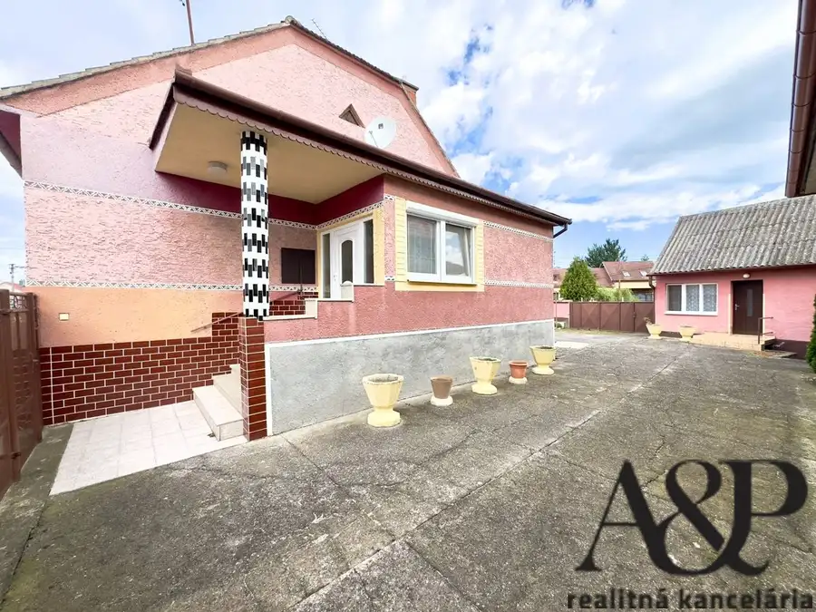
Dom10 Cena dohodouRodinný dom s garážou, letnou kuchyňou a pozemkom 1130m2, Sekule, okr. Senica Sekule 100 m² A&P REALITNÁ KANCELÁRIA Vám vo výhradnom zastúpení majiteľov ponúka na predaj samostatne stojaci rodinný dom, ktorý sa nachádza v obci…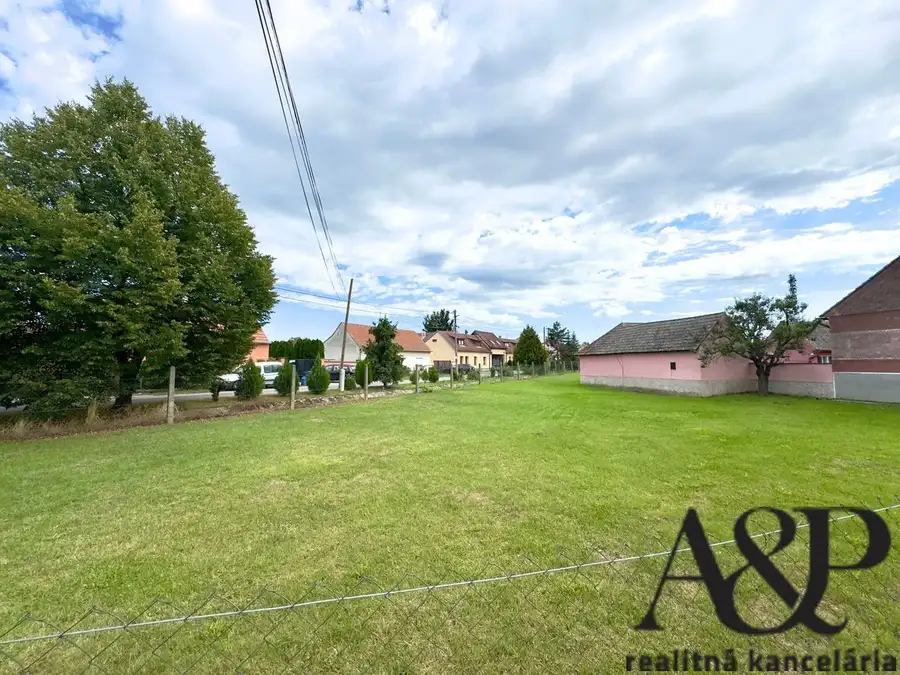
Pozemok5 Cena dohodouPozemok pre výstavbu rodinného domu, 710m2, Sekule, okr. Senica Sekule 710 m² A&P REALITNÁ KANCELÁRIA - Vo výhradnom zastúpení majiteľov vám ponúkame na predaj rovinatý pozemok vo výbornej lokalite obce Sekule. Pozemok…Tomuto výberu zatiaľ nezodpovedá žiadna ponuka. Napíšte mi, čo hľadáte.